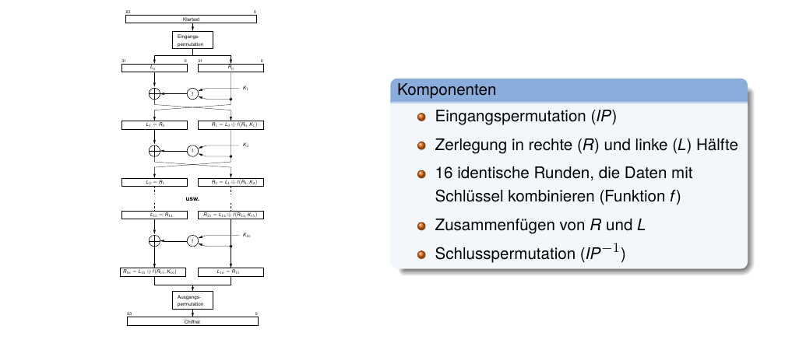
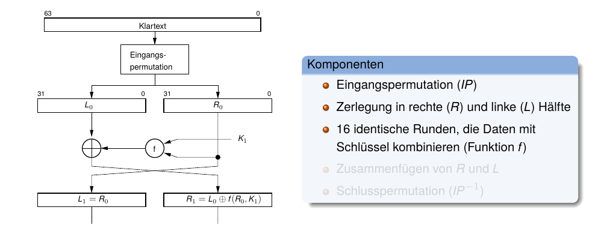
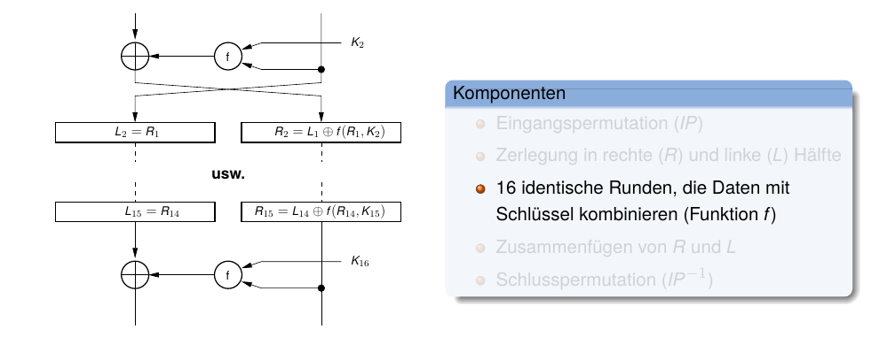
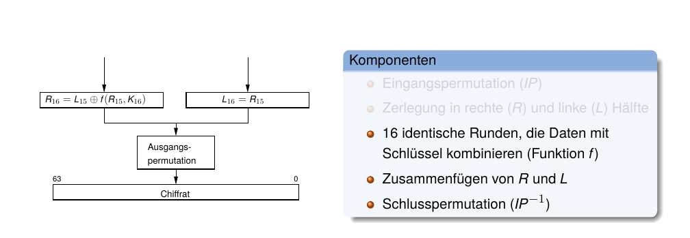
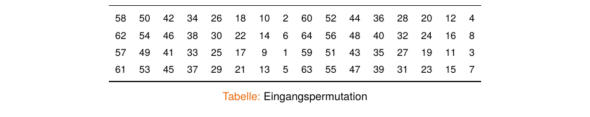
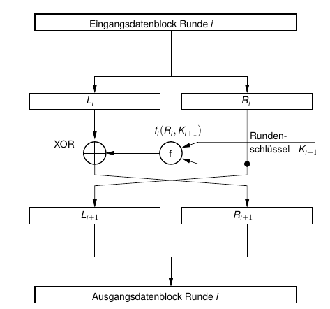
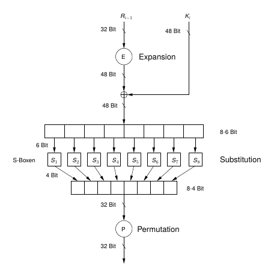
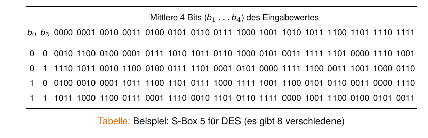
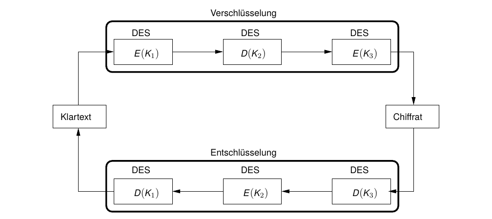

Data Encryption Standard (DES)

Prof. Dr. Lukas Iffländer
HTW Dresden
07.08.2026
Agenda
- 01DES Überblick
- 02DES-Algorithmus
- 03Feistel-Chiffre
- 04Sicherheit von DES
- 05Mehrfachverschlüsselung
- 06Triple DES
Symmetrischer Data Encryption Standard (DES) [1]
- Ergebnis eines durch das National Bureau of Standards ausgeschriebenen Wettbewerbs
- von IBM im Jahre 1974 erstmalig beschrieben
- Prüfung/Mitentwicklung durch NSA
- Standard ANSI X3.92, 1981
- Prüfung alle 5 Jahre, ob Standard noch den Erfordernissen eines Kryptosystems entspricht (-> 1987, 1993 re-zertifiziert)
- Schlüssellänge: 56 Bit
- blockbasiertes Verfahren: 64 Bit Klartext -> 64 Bit Chiffrat
- erstes erfolgreiches Verschlüsselungsverfahren für Rechnereinsatz; Grundlage für alle modernen Verfahren
DES
Überblick

DES
Überblick

DES
Überblick

DES
Überblick

DES
Eingangspermutation

Lesart:
Bit 58 des Klartextes wird auf Bit 1 der Permutation abgebildet, Bit 50 des Klartextes auf Bit 2 der Permutation usw.
Hinweis
IP und IP−1 erhöhen die kryptografische Stärke nicht; sie sind historisch u. a. für Hardwareverdrahtung gedacht.
DES
Anmerkungen zum Algorithmus
- Schlüssel ist eigentlich auch 64-bittig, 8 Bit dienen jedoch der Paritätsprüfung (jedes Byte muss ungerade Parität haben)
- für jede der 16 Runden wird aus dem 56-Bit-Schlüssel \(K\) ein Subschlüssel \(K_i\) mit 48 Bit Länge generiert
- Struktur des DES-Algorithmus ist ziemlich regulär; eine so genannte Feistel-Chiffre
- Entschlüsselung in umgekehrter Reihenfolge der 16 Runden
- sehr leicht in Hardware zu synthetisieren (keine Additionen/Multiplikationen, nur Verschiebungen, Permutationen und XOR)
DES
Feistel-Chiffre

Verschlüsselung
\[ \begin{aligned} L_{i+1} &= R_i \\ R_{i+1} &= L_i \oplus f(R_i, K_{i+1}) \end{aligned} \]
Entschlüsselung (gleiche f , umgekehrte Rundenschlüssel)
\[ \begin{aligned} R_i &= L_{i+1} \\ L_i &= R_{i+1} \oplus f(R_i, K_{i+1}) \end{aligned} \]
- keine Umkehrfunktion f −1(R, K ) nötig
- Ver- und Entschlüsselung mit gleicher Funktion f (R, K )
- Funktionsblock vieler symmetrischer Verfahren
Struktur einer Runde (\(f(R_{i-1}, K_i)\))

S-Boxen (Substitution Boxen)
- zentraler Bestandteil jedes symmetrischen Kryptografie-Verfahrens
- nichtlineare Substitution; m Eingangs- werden auf n Ausgangsbits abgebildet
- S-Boxen in DES sind „mythenumrankt“, da Prinzipien ihres Entwurfs nicht offengelegt wurden

Zur Sicherheit von DES
- bislang kein kryptanalytischer Angriff publiziert
- (unbewiesener) Verdacht, NSA könnte eine Hintertür eingebaut haben
- Hauptmanko: Schlüssellänge von 56 Bit ist zu kurz
- Wettbewerb DES Challenge (“Wer schafft es als erster, zu einem vorgegebenen DES-Schlüssel die zugehörige Passphrase per Brute-Force-Angriff zu ermitteln?”)
- DES Challenge, 1997: \(t = 96d\) benötigt
- DES Challenge II-1, 1998: \(t = 48d\) (distributed.net)
- DES Challenge II-2, 1998: \(t = 56h\) mittels Deep Crack, einem parallelen Spezialsystem, 250.000$
- DES Challenge III, 1999: \(t = 22h15min\)
- GTX 1080 Ti, 2018: \(t = 15d\)
- Rainbow-Table + Chosen-Plaintext, 2017: \(t = 25s\)
Kombination von Blockchiffren
Idee
- Weiternutzung eines (bewährten) Verfahrens
- Verlängerung des Schlüssels
-> Erhöhung der Sicherheit des Verfahrens
Mehrfachverschlüsselung: Hintereinanderausführung ein- und desselben Algorithmus mit unterschiedlichen Schlüsseln.
- bei Nutzung gleicher Schlüssel bleibt Komplexität eines Brute-Force-Angriffes konstant (\(\Rightarrow\) Ziel verfehlt)
Wie oft soll ich nun DES o. ä. ausführen?
Doppelte Verschlüsselung
\[ C = E_{K_2}(E_{K_1}(P)) \]
Hat \(K\) eine Breite von \(n\) Bits, so müssen \(2^n\) Schlüssel probiert werden. Also müssen bei doppelter Verschlüsselung \(2^{2n}\) Schlüssel probiert werden, oder?
Antwort: Nein! Es gibt den sog. Meet-in-the-Middle-Angriff1, eine spezielle Form eines Known-Plaintext-Angriffs.
Meet-in-the-Middle-Angriff
Zwei Chiffrate \(C_1\), \(C_2\) und zwei (zugehörige) Plaintexte \(P_1\), \(P_2\) müssen bekannt sein:
\[ \begin{aligned} C_1 &= E_{K_2}(E_{K_1}(P_1)) \\ C_2 &= E_{K_2}(E_{K_1}(P_2)) \end{aligned} \]
Angriffsidee (“von beiden Seiten”):
- \(P_1\) mit allen möglichen Schlüsseln verschlüsseln und Chiffrate abspeichern
- \(C_1\) mit allen möglichen Schlüsseln entschlüsseln und Ergebnis mit allen Chiffraten aus 1. vergleichen
- bei Übereinstimmung: zugehörige Schlüssel nutzen, um \(P_2\) (doppelt) zu verschlüsseln; Ergebnis = \(C_2\) \(\Rightarrow\) Schlüssel aus 1. ist \(K_1\), Schlüssel aus 2. ist \(K_2\)
- ansonsten weitersuchen
Meet-in-the-Middle-Angriff
Schlussfolgerung
- benötigt viel Speicherplatz (für \(2^n\) Blöcke)
- Es müssen bei \(n\) Bit Schlüssellänge \(2 \cdot 2^n\) Schlüssel durchprobiert werden
Schlussfolgerung
Ist ein Meet-in-the-Middle-Angriff möglich, dann führt die doppelte Verschlüsselung nicht zur Erschwerung des Brute-Force-Angriffes von \(2^n\) auf \(2^{2n}\) Versuche, sondern nur zu \(2^{n+1}\).
Fazit
Doppelte Verschlüsselung ist (so gut wie) nutzlos!
Abhilfe
dreifach verschlüsseln!
Triple DES (3DES)
Struktur

Triple DES
Anmerkungen
- drei verschiedene Schlüssel nötig
- Verschlüsselung:
\[ C = E_{K_3}(D_{K_2}(E_{K_1}(P))) \]
- sog. Encryption-Decryption-Encryption (EDE-Modus)
- sicherer als aufeinanderfolgende Verschlüsselung (Meet-in-the-Middle-Angriff benötigt ungefähr \(2^{2n}\) Operationen)
- Entschlüsselung (analog):
\[ P = D_{K_1}(E_{K_2}(D_{K_3}(C))) \]
- Varianten: EDE2 (2 Schlüssel, \(K_1 = K_3\)) und EDE3 (3 Schlüssel, \(K_1\), \(K_2\), \(K_3\) verschieden)
- Effektive Sicherheitsstärke: EDE2 \(\approx\) 80 Bit; EDE3 \(\approx\) 112 Bit (trotz 168-Bit Schlüssel wegen Meet-in-the-Middle-Angriffen)
- Heute gilt 3DES (TDEA) als veraltet; für neue Systeme wird AES empfohlen
- dreifacher Verarbeitungsaufwand (!)
Literaturverzeichnis I
[1] Reinhard Wobst. Abenteuer Kryptologie. Methoden, Risiken und Nutzen der Datenverschlüsselung. 3. Aufl. net.com - networking & communications. Literaturverz. S. 435 - 450. München: Addison-Wesley, 2001. 456 S. isbn: 3827318157.
Vielen Dank!
Prof. Dr. Lukas Iffländer
HTW Dresden
07.08.2026

07.08.2026 / Data Encryption Standard (DES) / HTW Dresden / Prof. Dr. Lukas Iffländer